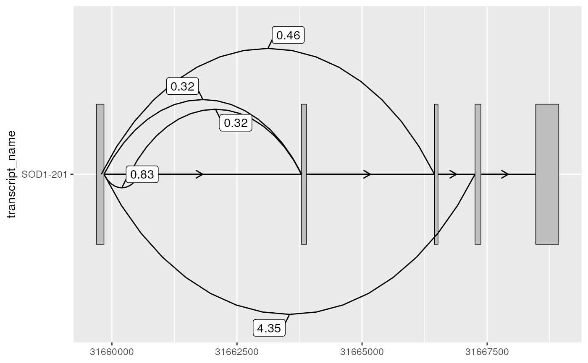

geom_junction_label_repel() labels junction curves at their midpoint using
ggrepel::geom_label_repel(). This can be useful to label and compare
junctions (plotted using geom_junction()) with metrics of their usage (e.g.
read counts or percent-spliced-in).
Usage
geom_junction_label_repel(
mapping = NULL,
data = NULL,
stat = "identity",
position = "identity",
parse = FALSE,
...,
junction.orientation = "alternating",
junction.y.max = 1,
angle = 90,
ncp = 15,
box.padding = 0.25,
label.padding = 0.25,
point.padding = 1e-06,
label.r = 0.15,
label.size = 0.25,
min.segment.length = 0,
arrow = NULL,
force = 1,
force_pull = 1,
max.time = 0.5,
max.iter = 10000,
max.overlaps = getOption("ggrepel.max.overlaps", default = 10),
nudge_x = 0,
nudge_y = 0,
xlim = c(NA, NA),
ylim = c(NA, NA),
na.rm = FALSE,
show.legend = NA,
direction = c("both", "y", "x"),
seed = NA,
verbose = FALSE,
inherit.aes = TRUE
)Arguments
- mapping
Set of aesthetic mappings created by
aesoraes_. If specified andinherit.aes = TRUE(the default), is combined with the default mapping at the top level of the plot. You only need to supplymappingif there isn't a mapping defined for the plot.- data
A data frame. If specified, overrides the default data frame defined at the top level of the plot.
- stat
The statistical transformation to use on the data for this layer, as a string.
- position
Position adjustment, either as a string, or the result of a call to a position adjustment function.
- parse
If TRUE, the labels will be parsed into expressions and displayed as described in ?plotmath
- ...
other arguments passed on to
layer. There are three types of arguments you can use here:Aesthetics: to set an aesthetic to a fixed value, like
colour = "red"orsize = 3.Other arguments to the layer, for example you override the default
statassociated with the layer.Other arguments passed on to the stat.
- junction.orientation
character()one of "alternating", "top" or "bottom", specifying where the junctions will be plotted with respect to each transcript (y).- junction.y.max
double()the max y-value of each junction curve. It can be useful to adjust this parameter when junction curves overlap with one another/other transcripts or extend beyond the plot margins.- angle
A numeric value between 0 and 180, giving an amount to skew the control points of the curve. Values less than 90 skew the curve towards the start point and values greater than 90 skew the curve towards the end point.
- ncp
The number of control points used to draw the curve. More control points creates a smoother curve.
- box.padding
Amount of padding around bounding box, as unit or number. Defaults to 0.25. (Default unit is lines, but other units can be specified by passing
unit(x, "units")).- label.padding
Amount of padding around label, as unit or number. Defaults to 0.25. (Default unit is lines, but other units can be specified by passing
unit(x, "units")).- point.padding
Amount of padding around labeled point, as unit or number. Defaults to 0. (Default unit is lines, but other units can be specified by passing
unit(x, "units")).- label.r
Radius of rounded corners, as unit or number. Defaults to 0.15. (Default unit is lines, but other units can be specified by passing
unit(x, "units")).- label.size
Size of label border, in mm.
- min.segment.length
Skip drawing segments shorter than this, as unit or number. Defaults to 0.5. (Default unit is lines, but other units can be specified by passing
unit(x, "units")).- arrow
specification for arrow heads, as created by
arrow- force
Force of repulsion between overlapping text labels. Defaults to 1.
- force_pull
Force of attraction between a text label and its corresponding data point. Defaults to 1.
- max.time
Maximum number of seconds to try to resolve overlaps. Defaults to 0.5.
- max.iter
Maximum number of iterations to try to resolve overlaps. Defaults to 10000.
- max.overlaps
Exclude text labels that overlap too many things. Defaults to 10.
- nudge_x
Horizontal and vertical adjustments to nudge the starting position of each text label. The units for
nudge_xandnudge_yare the same as for the data units on the x-axis and y-axis.- nudge_y
Horizontal and vertical adjustments to nudge the starting position of each text label. The units for
nudge_xandnudge_yare the same as for the data units on the x-axis and y-axis.- xlim
Limits for the x and y axes. Text labels will be constrained to these limits. By default, text labels are constrained to the entire plot area.
- ylim
Limits for the x and y axes. Text labels will be constrained to these limits. By default, text labels are constrained to the entire plot area.
- na.rm
If
FALSE(the default), removes missing values with a warning. IfTRUEsilently removes missing values.- show.legend
logical. Should this layer be included in the legends?
NA, the default, includes if any aesthetics are mapped.FALSEnever includes, andTRUEalways includes.- direction
"both", "x", or "y" -- direction in which to adjust position of labels
- seed
Random seed passed to
set.seed. Defaults toNA, which means thatset.seedwill not be called.- verbose
If
TRUE, some diagnostics of the repel algorithm are printed- inherit.aes
If
FALSE, overrides the default aesthetics, rather than combining with them. This is most useful for helper functions that define both data and aesthetics and shouldn't inherit behaviour from the default plot specification, e.g.borders.
Value
the return value of a geom_* function is not intended to be
directly handled by users. Therefore, geom_* functions should never be
executed in isolation, rather used in combination with a
ggplot2::ggplot() call.
Details
geom_junction_label_repel() requires the following aes(); xstart,
xend, y (e.g. transcript name) and label. Under the hood,
geom_junction_label_repel() generates the same junction curves as
geom_junction() to obtain curve midpoints for labeling. Therefore, it is
important that users use the same input data and parameters that alter
junction curves (namely junction.orientation, junction.y.max, angle,
ncp) for geom_junction_label_repel() that they have used for
geom_junction().
Examples
library(magrittr)
library(ggplot2)
# to illustrate the package's functionality
# ggtranscript includes example transcript annotation
sod1_annotation %>% head()
#> # A tibble: 6 × 8
#> seqnames start end strand type gene_name transcript_name transcript_biot…
#> <fct> <int> <int> <fct> <fct> <chr> <chr> <chr>
#> 1 21 3.17e7 3.17e7 + gene SOD1 NA NA
#> 2 21 3.17e7 3.17e7 + tran… SOD1 SOD1-202 protein_coding
#> 3 21 3.17e7 3.17e7 + exon SOD1 SOD1-202 protein_coding
#> 4 21 3.17e7 3.17e7 + CDS SOD1 SOD1-202 protein_coding
#> 5 21 3.17e7 3.17e7 + star… SOD1 SOD1-202 protein_coding
#> 6 21 3.17e7 3.17e7 + exon SOD1 SOD1-202 protein_coding
# as well as a set of example (unannotated) junctions
# originating from GTEx and downloaded via the Bioconductor package snapcount
sod1_junctions
#> # A tibble: 5 × 5
#> seqnames start end strand mean_count
#> <fct> <int> <int> <fct> <dbl>
#> 1 chr21 31659787 31666448 + 0.463
#> 2 chr21 31659842 31660554 + 0.831
#> 3 chr21 31659842 31663794 + 0.316
#> 4 chr21 31659842 31667257 + 4.35
#> 5 chr21 31660351 31663789 + 0.324
# extract exons
sod1_exons <- sod1_annotation %>% dplyr::filter(
type == "exon",
transcript_name == "SOD1-201"
)
sod1_exons %>% head()
#> # A tibble: 5 × 8
#> seqnames start end strand type gene_name transcript_name transcript_biot…
#> <fct> <int> <int> <fct> <fct> <chr> <chr> <chr>
#> 1 21 3.17e7 3.17e7 + exon SOD1 SOD1-201 protein_coding
#> 2 21 3.17e7 3.17e7 + exon SOD1 SOD1-201 protein_coding
#> 3 21 3.17e7 3.17e7 + exon SOD1 SOD1-201 protein_coding
#> 4 21 3.17e7 3.17e7 + exon SOD1 SOD1-201 protein_coding
#> 5 21 3.17e7 3.17e7 + exon SOD1 SOD1-201 protein_coding
# add transcript_name to junctions for plotting
sod1_junctions <- sod1_junctions %>%
dplyr::mutate(transcript_name = "SOD1-201")
# geom_junction_label_repel() can be used to label junctions
base <- sod1_exons %>%
ggplot(aes(
xstart = start,
xend = end,
y = transcript_name
)) +
geom_range() +
geom_intron(
data = to_intron(sod1_exons, "transcript_name")
)
# this can be useful to label junctions with their counts
base +
geom_junction(
data = sod1_junctions,
junction.y.max = 0.5
) +
geom_junction_label_repel(
data = sod1_junctions,
aes(label = round(mean_count, 2)),
junction.y.max = 0.5
)
